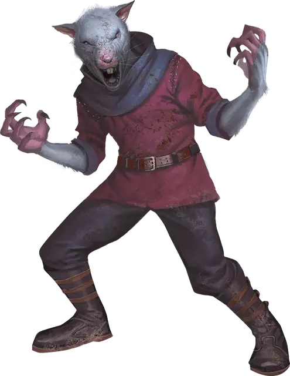

Веркрыс
Wererat
Среднее или Маленькое Чудовище (Ликантроп), Принципиальное Злое

Класс Защиты 13 Инициатива +3 (13)
Хиты 60 (11к8 + 11)
Скорость 30 футов, Лазания 30 футов
| мод | спас | ||
|---|---|---|---|
| СИЛ | 10 | +0 | +0 |
| ЛОВ | 16 | +3 | +3 |
| ТЕЛ | 12 | +1 | +1 |
| мод | спас | ||
|---|---|---|---|
| ИНТ | 11 | +0 | +0 |
| МДР | 10 | +0 | +0 |
| ХАР | 8 | −1 | −1 |
Чувства Тёмное зрение 60 футов, пассивное Восприятие 14
Языки Общий (не может говорить в форме крысы)
Опасность 2 (450 опыта; БВ +2)
Действия
Мультиатака. Веркрыс совершает две атаки Царапаньем или Одноручным арбалетом в любой комбинации. Он может заменить одну из этих атак на атаку Укусом.
Укус (только в форме крысы или гибридной форме). Бросок рукопашной атаки: +5, досягаемость 5 фт. Попадание: 8 (2к4 + 3) Колющего урона. Если цель — Гуманоид, она подвергается воздействию следующего эффекта: Спасбросок Телосложения: Сл 11. Провал: Цель проклята. Когда Хиты проклятой цели опускаются до 0, она становится Веркрысом под управлением Мастера и получает 10 Хитов. Успех: Цель получает Иммунитет к проклятью этого веркрыса на 24 часа.
Царапание. Бросок рукопашной атаки: +5, досягаемость 5 фт. Попадание: 6 (1к6 + 3) Рубящего урона.
Одноручный арбалет (только в гуманоидной или гибридной форме). Бросок дальнобойной атаки: +5, дистанция 30/120 фт. Попадание: 6 (1к6 + 3) Колющего урона.
Бонусные действия
Перевоплощение. Веркрыс либо перевоплощается в гибрид крысы и гуманоида Среднего размера или крысу Маленького размера, либо возвращается в истинную форму гуманоида. Его статистика, кроме размера, не меняется в зависимости от формы. Снаряжение, которое он носит или несёт, не трансформируется.
Бонус мастерства +2
Среда обитания Город, Леса
Сокровища Личные
Веркрыс
Преображённый коварством крысы
Веркрысы способны принять облик гигантской крысы или гибрида гуманоида и крысы.
Как правило, они могут перевоплощаться по собственной воле, но порой в полной темноте или ночью в новолуние изменение происходит само по себе. Нередко источником подобной ликантропии служит божественное проклятие — наказание за лживую натуру или преступления вероломных предков. Веркрысы часто действуют группами и создают шайки разбойников или воровские гильдии.